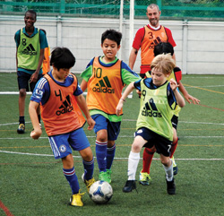
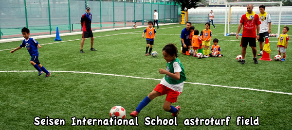
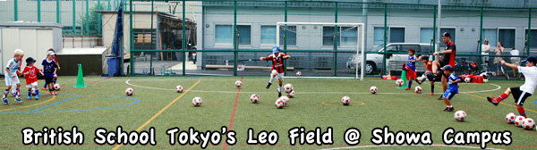
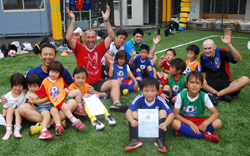

|
"Football Fun in the Sun."
今年の夏、BFAでサッカーの「楽しい」を実感しよう！
今年もBFAのサマーキャンプを開催いたします！
6歳～12歳が対象のサマーキャンプでは年齢別に分けたクラス構成で実施いたします。
開催地は清泉インターナショナルスクール、British School Tokyoの昭和女子大キャンパス（三軒茶屋）の2か所を予定しています。
キャンプを仕切るコーチ陣はイギリスフットボール（サッカー）協会公式指導免許を取得している選りすぐりのコーチ達で、全員カリスマ性溢れるプロフェッショナルですので、安心してご参加ください。
参加する日にちは各開催地のフルスケジュール（4〜5日）で参加することをおすすめしておりますが、単日での参加も可能となっております。
参加者全員にBFA公式サマーキャンプT-シャツとサマーキャンプ参加証明書をプレゼント！！
BFAでは子供達がサッカーを通じて「楽しい」を実感して頂けることを一番に運営しております。
あなたの最寄のキャンプに是非参加して、一緒に「楽しい」夏をすごしましょう！
東京
清泉インターナショナルスクール、用賀 MAP British School Tokyoの昭和女子大キャンパス（三軒茶屋） MAP
開催日時及び会場
 7月22日 (水) − 24日（金）3日間 @ TBA 7月22日 (水) − 24日（金）3日間 @ TBA
- 8月17日 (月) − 21日（金）5日間 @ British School Tokyoの昭和女子大キャンパス（三軒茶屋）MAP
- Bulldogsブルドッグ(5・6歳対象) 午前10：00 ~ 11：40 (100分)
BFAメンバー1 日¥3,000 / BFAメンバー以外1 日¥4,000
- Lionsライオン(7・8歳対象) 午前 10：00 ~ 午後12：00 (2時間)
BFAメンバー1 日¥4,000 / BFAメンバー以外1 日¥5,000
- Academy アカデミー(9・10歳対象) 午後1:30 ~ 4:30 (3時間)
BFAメンバー1 日¥6,000 / BFAメンバー以外1 日¥7,000
- Academy Starsアカデミースターズ(11〜14歳対象) 午後1:30 ~ 4:30 (3時間)
BFAメンバー1 日¥6,000 / BFAメンバー以外1 日¥7,000

ご参加にあたって
- サッカーがしやすいスポーツウェアを着用してください。
- サッカーブーツは、金属スパイクではないサッカーブーツまたは運動靴をご着用下さい。４歳から8歳のお子様は、運動靴でも大丈夫ですが、滑りにくいものが適しています。
- スネあては必須です。
- 雨天の場合も決行しますが、暴雨風・雷の場合は中止となり、参加費の返金はありませんので予めご了承ください。YC&ACでは同施設内の体育館で行いますので、その場合は体育館履きが必要になります。
- 飲料水又はスポーツドリンクを大目にご用意ください。
＊5日間ご参加頂いた方には、キャンプ終了認定書とBFAオリジナルTシャツを最終日に差し上げます。
British Football Academyのコーチ陣は、世界でも広く認識されている、English Football Association (The FA・イギリスサッカー協会)の認定を受けています。アカデミーのコーチは、全員英語を母国語としており、「全ての子供達に楽しいサッカーを」をモットーに、普段もアカデミーでコーチングをしている経験豊かなコーチ陣です。

お問い合わせは、こちらまで：CONTACT US
お申込は：SIGN UP ONLINE HERE
お支払い：下記の銀行口座までお振込み下さい。
三菱東京ＵＦＪ銀行
渋谷支店 (135)
普通口座 3648175
名義 Footy Japan株式会社 (カタカナが必要な場合は「 フテイー ジヤパン （カ 」
注1： 参加人数が最低定員に満たない場合は、開催中止となりますのでご了承くださいませ。 開催実施または中止については、開催1週間前にメールにて連絡差し上げまして、参加費はご返金いたします。
注２： サマーキャンプセッションは、雷、暴風雨などの悪天候以外は、雨天決行となります。つきましては、悪天候によるセッションのキャンセル、および、お客様のご事情による欠席における料金の返金は致し兼ねますのでご了承の程お願い申し上げます。
注３：キャンセルについて：次の場合は、キャンセル料を頂きます：
前日キャンセル：料金100％、2日から4日前までのキャンセル：料金50％
|
|


{kind=link}